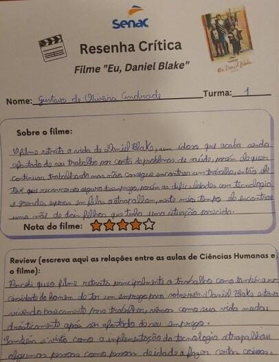
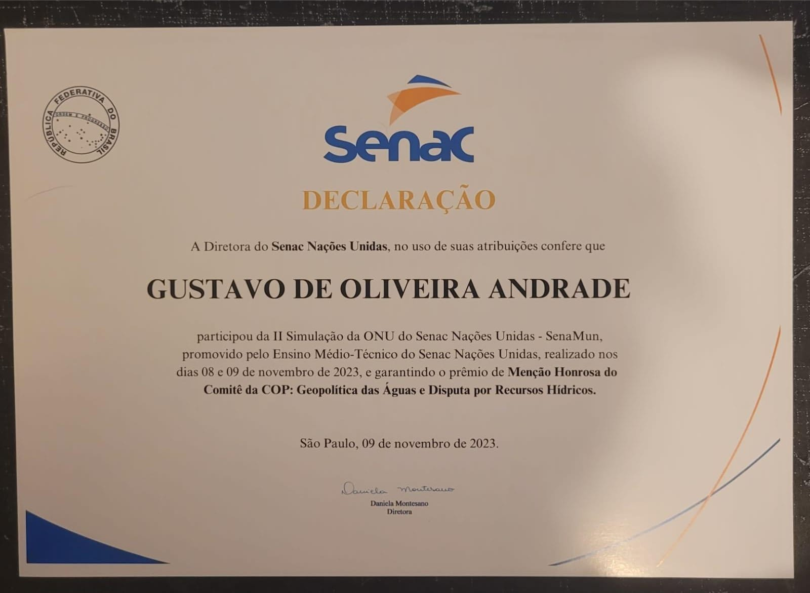

No segundo ano realizei uma atividade indivudal que era produzir uma review sobre o filme Eu Daniel Blake, um idoso que foi afastado de seu emprego e teve que recorrer ao "seguro desemprego", entretanto por conta de ser uma pessoa de idade avançada não compreendia como utilizar as tecnologias para realizar seu cadastro, ao longo do filme Daniel conhece uma mãe que esta em uma situção parecida e sua vida muda drásticamente após isso.
Gostei de realizar esta atividade pois ela retrata muito bem as dificuldades que algumas pessoas passam, mas o que mais achei interessante foi ler minha review e perceber que se tivesse que escrever hoje em dia ela seria muito melhor e bem diferente, acho que isso me mostra que ao decorrer do tempo eu amadureci e aprendi a expressar e compartilhar melhor minhas opiniões.

No terceiro ano participei junto da minha dupla da segunda simulação da ONU do Senac (SENAMUN) e ganhei um certificado de menção honrosa por ter participado ativamente em meu comitê.
E mais uma vez percebi que estava tendo mais uma conquista em minha vida, receber outro certificado após o de CN me inspirou ainda mais a ir atrás dos meus sonhos e de que sou capaz com muito esforço e dedicação, além deste evento ter me proporcionado uma experiência única de como realmente discussões mudiais acontecem e serem tão importantes no mundo atual.